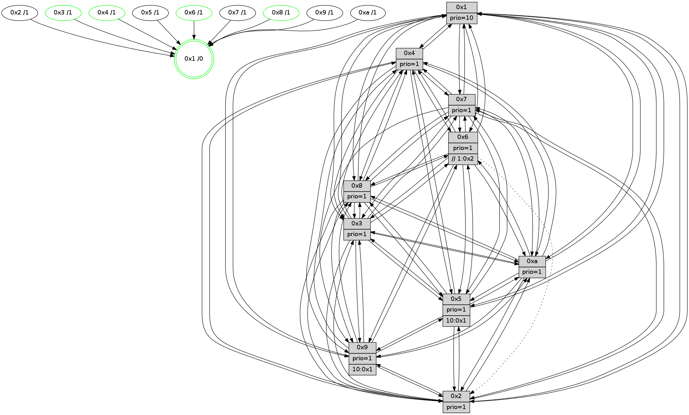

>> << IDX [start] -100 -25 -5 +0 +5 +25 [1560.1397891]
 Previous packets
----------------------------------------------------------------------
1555.411006 beacon01(faad) #0 coord=01,02,03,04,05,06,07,0a,09,08 cycle=688.0ms assoc
-- color-indic=1 64 2f c2
1555.420988 beacon02(faad) #0 coord=01,02,03,04,05,06,07,0a,09,08 cycle=688.0ms assoc 64 bc f3
1555.430989 beacon03(faad) #0 coord=01,02,03,04,05,06,07,0a,09,08 cycle=688.0ms assoc 64 c6 be
1555.440989 beacon04(faad) #0 coord=01,02,03,04,05,06,07,0a,09,08 cycle=688.0ms assoc 64 b1 54
1555.450989 beacon05(faad) #0 coord=01,02,03,04,05,06,07,0a,09,08 cycle=688.0ms assoc 64 cb 19
1555.460990 beacon06(faad) #0 coord=01,02,03,04,05,06,07,0a,09,08 cycle=688.0ms assoc 64 45 ce
1555.470990 beacon07(faad) #0 coord=01,02,03,04,05,06,07,0a,09,08 cycle=688.0ms assoc 64 3f 83
1555.480995 beacon0a(faad) #0 coord=01,02,03,04,05,06,07,0a,09,08 cycle=688.0ms assoc 64 4e 88
1555.500994 beacon08(faad) #0 coord=01,02,03,04,05,06,07,0a,09,08 cycle=688.0ms assoc 64 ba 12
1555.512863 [Hello(8): seq=935 sym=5,2,3,7,9,6,4,10,1 sysInfo=hasWarning stat=5:5,1,8,3/2:13,0,3,14/3:2,1,8,6/7:7,3,2,0/9:7,0,8,7/6:13,1,5,3/4:3,8,14,3/10:14,13,14,5/1:11,14,0,0]
1555.515974 [Color(1) seq=671 @0:0 prio=10]
1555.517937 [Hello(4): seq=991 sym=5,8,6,2,3,9,7,10,1 sysInfo=hasWarning stat=5:3,14,10,4/8:6,4,1,0/6:9,9,7,4/2:12,9,13,3/3:3,0,5,1/9:13,8,12,4/7:6,1,2,0/10:14,14,5,15/1:4,6,15,1]
1555.521078 [Hello(7): seq=991 sym=2,3,5,6,8,4,9,10,1 sysInfo=hasWarning stat=2:1,3,10,6/3:4,12,15,6/5:5,13,12,5/6:12,11,11,15/8:1,4,4,2/4:6,9,3,1/9:11,8,4,4/10:8,5,3,9/1:2,13,11,0]
1555.524864 [Hello(9): seq=935 sym=2,5,3,4,7,6,8,10,1 sysInfo=hasWarning stat=2:14,5,15,13/5:1,9,7,0/3:12,11,12,7/4:10,10,8,4/7:3,1,9,5/6:12,6,14,3/8:10,3,7,10/10:9,11,9,0/1:12,12,14,1]
1555.527427 [Hello(10): seq=924 sym=6,2,3,8,7,5,9,4,1 sysInfo=hasWarning stat=6:3,5,12,7/2:13,9,14,2/3:3,0,5,15/8:5,14,2,7/7:13,5,15,10/5:3,13,6,3/9:8,5,0,1/4:14,10,11,4/1:13,4,14,1]
----------------------------------------------------------------------
1556.199138 beacon01(faad) #0 coord=01,02,03,04,05,06,07,0a,09,08 cycle=688.0ms assoc
-- color-indic=1 64 fb f7
1556.209121 beacon02(faad) #0 coord=01,02,03,04,05,06,07,0a,09,08 cycle=688.0ms assoc 64 68 c6
1556.219119 beacon03(faad) #0 coord=01,02,03,04,05,06,07,0a,09,08 cycle=688.0ms assoc 64 12 8b
1556.229121 beacon04(faad) #0 coord=01,02,03,04,05,06,07,0a,09,08 cycle=688.0ms assoc 64 65 61
1556.239120 beacon05(faad) #0 coord=01,02,03,04,05,06,07,0a,09,08 cycle=688.0ms assoc 64 1f 2c
1556.249121 beacon06(faad) #0 coord=01,02,03,04,05,06,07,0a,09,08 cycle=688.0ms assoc 64 91 fb
1556.259122 beacon07(faad) #0 coord=01,02,03,04,05,06,07,0a,09,08 cycle=688.0ms assoc 64 eb b6
1556.269126 beacon0a(faad) #0 coord=01,02,03,04,05,06,07,0a,09,08 cycle=688.0ms assoc 64 9a bd
1556.289126 beacon08(faad) #0 coord=01,02,03,04,05,06,07,0a,09,08 cycle=688.0ms assoc 64 6e 27
1556.301034 [Hello(1): seq=901 sym=4,2,9,5,10,3,8,6,7 sysInfo=coloring-mode-on,ColoringModeRequestCalled stat=4:15,4,12,5/2:5,2,4,7/9:8,8,5,4/5:15,10,12,11/10:5,13,15,9/3:0,3,13,13/8:11,2,6,8/6:8,12,9,5/7:2,3,15,3]
1556.304403 [Color(8) seq=579 @0:0 prio=1]
1556.305688 [Hello(6): seq=992 sym=3,2,5,4,7,9,8,10,1 sysInfo=hasWarning stat=3:14,8,11,0/2:0,13,5,1/5:7,13,1,6/4:5,14,10,10/7:6,7,10,1/9:9,14,13,12/8:9,13,4,11/10:14,11,6,15/1:14,12,0,1]
1556.308219 [Hello(2): seq=988 sym=4,5,7,3,9,8,10,1 sysInfo=hasWarning stat=4:8,4,10,15/5:0,0,12,4/7:10,6,0,3/3:4,5,1,0/9:3,14,5,11/8:3,2,8,1/10:4,13,5,13/1:4,9,9,0]
1556.311664 [Color(6) seq=624 @0:0 prio=1 >>1.@2,1.@3,1.@4]
1556.313355 [Hello(5): seq=992 sym=7,6,4,2,1,9,8,10,3 sysInfo=hasWarning stat=7:4,6,2,1/6:5,6,2,2/4:14,13,6,1/2:4,6,1,0/1:9,11,8,0/9:9,7,12,13/8:7,5,7,9/10:2,1,0,11/3:4,7,1,0]
1556.316383 [Hello(3): seq=992 sym=1,7,2,4,8,9,10,5 sysInfo=hasWarning stat=1:12,10,2,0/7:9,3,0,0/2:3,8,1,0/4:9,7,2,15/8:15,3,9,10/9:3,7,9,2/10:6,10,15,6/5:3,15,8,3]
1556.319067 [Color(3) seq=621 @0:0 prio=1]
1556.326083 [Color(4) seq=519 @0:0 prio=1]
----------------------------------------------------------------------
1556.987268 beacon01(faad) #0 coord=01,02,03,04,05,06,07,0a,09,08 cycle=688.0ms assoc
-- color-indic=1 64 47 f2
1556.997250 beacon02(faad) #0 coord=01,02,03,04,05,06,07,0a,09,08 cycle=688.0ms assoc 64 d4 c3
1557.007250 beacon03(faad) #0 coord=01,02,03,04,05,06,07,0a,09,08 cycle=688.0ms assoc 64 ae 8e
1557.017249 beacon04(faad) #0 coord=01,02,03,04,05,06,07,0a,09,08 cycle=688.0ms assoc 64 d9 64
1557.027251 beacon05(faad) #0 coord=01,02,03,04,05,06,07,0a,09,08 cycle=688.0ms assoc 64 a3 29
1557.037252 beacon06(faad) #0 coord=01,02,03,04,05,06,07,0a,09,08 cycle=688.0ms assoc 64 2d fe
1557.047252 beacon07(faad) #0 coord=01,02,03,04,05,06,07,0a,09,08 cycle=688.0ms assoc 64 57 b3
1557.057255 beacon0a(faad) #0 coord=01,02,03,04,05,06,07,0a,09,08 cycle=688.0ms assoc 64 26 b8
1557.077257 beacon08(faad) #0 coord=01,02,03,04,05,06,07,0a,09,08 cycle=688.0ms assoc 64 d2 22
1557.088444 [Hello(10): seq=925 sym=6,2,3,8,7,5,9,4,1 sysInfo=hasWarning stat=6:4,6,12,7/2:14,9,14,2/3:4,1,5,15/8:5,15,2,7/7:13,5,15,10/5:4,13,6,3/9:8,5,0,1/4:14,11,11,4/1:14,4,14,1]
1557.091480 [Hello(8): seq=936 sym=5,2,3,7,9,6,4,10,1 sysInfo=hasWarning stat=5:6,1,8,3/2:14,0,3,14/3:3,2,8,6/7:8,3,2,0/9:8,0,8,7/6:14,2,5,3/4:4,9,14,3/10:15,13,14,5/1:12,15,0,0]
1557.094682 [Hello(9): seq=936 sym=2,5,3,4,6,8,10,1 sysInfo=hasWarning stat=2:15,5,15,13/5:2,9,7,0/3:13,12,12,7/4:10,11,8,4/6:13,7,14,3/8:10,4,7,10/10:10,11,9,0/1:13,12,14,1]
1557.097649 [Hello(7): seq=992 sym=2,3,5,6,8,4,9,10,1 sysInfo=hasWarning stat=2:2,3,10,6/3:5,13,15,6/5:6,13,12,5/6:13,12,11,15/8:1,5,4,2/4:6,10,3,1/9:12,8,4,4/10:9,5,3,9/1:3,13,11,0]
1557.105663 [Color(1) seq=672 @0:0 prio=10]
----------------------------------------------------------------------
1557.775399 beacon01(faad) #0 coord=01,02,03,04,05,06,07,0a,09,08 cycle=688.0ms assoc
-- color-indic=1 64 83 fc
1557.785382 beacon02(faad) #0 coord=01,02,03,04,05,06,07,0a,09,08 cycle=688.0ms assoc 64 10 cd
1557.795381 beacon03(faad) #0 coord=01,02,03,04,05,06,07,0a,09,08 cycle=688.0ms assoc 64 6a 80
1557.805381 beacon04(faad) #0 coord=01,02,03,04,05,06,07,0a,09,08 cycle=688.0ms assoc 64 1d 6a
1557.815385 beacon05(faad) #0 coord=01,02,03,04,05,06,07,0a,09,08 cycle=688.0ms assoc 64 67 27
1557.825383 beacon06(faad) #0 coord=01,02,03,04,05,06,07,0a,09,08 cycle=688.0ms assoc 64 e9 f0
1557.835384 beacon07(faad) #0 coord=01,02,03,04,05,06,07,0a,09,08 cycle=688.0ms assoc 64 93 bd
1557.845386 beacon0a(faad) #0 coord=01,02,03,04,05,06,07,0a,09,08 cycle=688.0ms assoc 64 e2 b6
1557.865387 beacon08(faad) #0 coord=01,02,03,04,05,06,07,0a,09,08 cycle=688.0ms assoc 64 16 2c
1557.877206 [Hello(5): seq=993 sym=7,6,4,2,1,9,8,10,3 sysInfo=hasWarning stat=7:5,6,2,1/6:5,6,2,2/4:15,14,6,1/2:4,6,1,0/1:9,12,8,0/9:10,7,12,13/8:8,5,7,9/10:2,1,0,11/3:5,8,1,0]
1557.880561 [Color(8) seq=580 @0:0 prio=1]
1557.881973 [Hello(3): seq=993 sym=1,7,2,4,8,9,10,5 sysInfo=hasWarning stat=1:13,11,2,0/7:10,3,0,0/2:3,8,1,0/4:9,8,2,15/8:0,3,9,10/9:4,7,9,2/10:7,10,15,6/5:3,15,8,3]
1557.885947 [Color(3) seq=622 @0:0 prio=1]
1557.888073 [Hello(1): seq=902 sym=4,2,9,5,10,3,8,6,7 sysInfo=coloring-mode-on,ColoringModeRequestCalled stat=4:15,5,12,5/2:6,2,4,7/9:8,8,5,4/5:0,10,12,11/10:6,13,15,9/3:1,4,13,13/8:12,3,6,8/6:9,13,9,5/7:2,3,15,3]
1557.891213 [STC(1) #0.280 tree-change,inconsistent-stability,stable,to-color d=0]
1557.892654 [Hello(6): seq=993 sym=3,2,5,4,7,9,8,10,1 sysInfo=hasWarning stat=3:15,9,11,0/2:0,13,5,1/5:8,13,1,6/4:5,15,10,10/7:7,7,10,1/9:10,14,13,12/8:10,13,4,11/10:15,11,6,15/1:15,13,0,1]
1557.895786 [Color(6) seq=625 @0:0 prio=1 >>1.@2,1.@3,1.@4]
1557.897745 [Color(4) seq=520 @0:0 prio=1]
1557.899370 [Hello(2): seq=989 sym=4,5,7,3,9,8,10,1 sysInfo=hasWarning stat=4:8,5,10,15/5:1,0,12,4/7:11,6,0,3/3:5,6,1,0/9:4,14,5,11/8:4,2,8,1/10:4,13,5,13/1:4,10,9,0]
----------------------------------------------------------------------
1558.563529 beacon01(faad) #0 coord=01,02,03,04,05,06,07,0a,09,08 cycle=688.0ms assoc
-- color-indic=1 64 3f f9
1558.573512 beacon02(faad) #0 coord=01,02,03,04,05,06,07,0a,09,08 cycle=688.0ms assoc 64 ac c8
1558.583512 beacon03(faad) #0 coord=01,02,03,04,05,06,07,0a,09,08 cycle=688.0ms assoc 64 d6 85
1558.593513 beacon04(faad) #0 coord=01,02,03,04,05,06,07,0a,09,08 cycle=688.0ms assoc 64 a1 6f
1558.603511 beacon05(faad) #0 coord=01,02,03,04,05,06,07,0a,09,08 cycle=688.0ms assoc 64 db 22
1558.613512 beacon06(faad) #0 coord=01,02,03,04,05,06,07,0a,09,08 cycle=688.0ms assoc 64 55 f5
1558.623512 beacon07(faad) #0 coord=01,02,03,04,05,06,07,0a,09,08 cycle=688.0ms assoc 64 2f b8
1558.633516 beacon0a(faad) #0 coord=01,02,03,04,05,06,07,0a,09,08 cycle=688.0ms assoc 64 5e b3
1558.653518 beacon08(faad) #0 coord=01,02,03,04,05,06,07,0a,09,08 cycle=688.0ms assoc 64 aa 29
1558.664807 [STC(3)->1 #0.280 tree-change,inconsistent-stability,stable,to-color d=1]
1558.666198 [Hello(7): seq=993 sym=2,3,5,6,8,4,9,10,1 sysInfo=hasWarning stat=2:3,3,10,6/3:6,14,15,6/5:7,13,12,5/6:14,13,11,15/8:1,6,4,2/4:6,11,3,1/9:12,8,4,4/10:9,5,3,9/1:4,14,12,0]
1558.668641 [Hello(8): seq=937 sym=5,2,3,7,9,6,4,10,1 sysInfo=hasWarning stat=5:7,1,8,3/2:15,0,3,14/3:4,3,8,6/7:9,3,2,0/9:9,0,8,7/6:15,3,5,3/4:4,10,14,3/10:15,13,14,5/1:13,0,1,0]
1558.671358 [STC(7)->1 #0.280 tree-change,inconsistent-stability,to-color d=1]
1558.673206 [Color(1) seq=673 @0:0 prio=10]
1558.676212 [Hello(4): seq=993 sym=5,8,6,2,3,9,7,10,1 sysInfo=hasWarning stat=5:4,14,10,4/8:7,4,1,0/6:9,9,7,4/2:13,9,13,3/3:3,0,5,1/9:15,8,12,4/7:8,1,2,0/10:15,14,5,15/1:5,7,15,1]
1558.678636 [Hello(10): seq=926 sym=6,2,3,8,7,5,9,4,1 sysInfo=hasWarning stat=6:5,7,12,7/2:15,9,14,2/3:5,2,5,15/8:6,0,2,7/7:14,5,15,10/5:5,13,6,3/9:9,5,0,1/4:14,12,11,4/1:15,5,15,1]
1558.683211 [STC(10)->1 #0.280 tree-change,inconsistent-stability,to-color d=1]
1558.691600 [STC(9)->1 #0.280 tree-change,inconsistent-stability,to-color d=1]
----------------------------------------------------------------------
1559.351658 beacon01(faad) #0 coord=01,02,03,04,05,06,07,0a,09,08 cycle=688.0ms assoc
-- color-indic=1 64 0b e1
1559.361642 beacon02(faad) #0 coord=01,02,03,04,05,06,07,0a,09,08 cycle=688.0ms assoc 64 98 d0
1559.371641 beacon03(faad) #0 coord=01,02,03,04,05,06,07,0a,09,08 cycle=688.0ms assoc 64 e2 9d
1559.381641 beacon04(faad) #0 coord=01,02,03,04,05,06,07,0a,09,08 cycle=688.0ms assoc 64 95 77
1559.391641 beacon05(faad) #0 coord=01,02,03,04,05,06,07,0a,09,08 cycle=688.0ms assoc 64 ef 3a
1559.401641 beacon06(faad) #0 coord=01,02,03,04,05,06,07,0a,09,08 cycle=688.0ms assoc 64 61 ed
1559.411642 beacon07(faad) #0 coord=01,02,03,04,05,06,07,0a,09,08 cycle=688.0ms assoc 64 1b a0
1559.421646 beacon0a(faad) #0 coord=01,02,03,04,05,06,07,0a,09,08 cycle=688.0ms assoc 64 6a ab
1559.441646 beacon08(faad) #0 coord=01,02,03,04,05,06,07,0a,09,08 cycle=688.0ms assoc 64 9e 31
1559.453109 [Hello(2): seq=990 sym=4,5,7,3,9,8,10,1 sysInfo=hasWarning stat=4:9,5,10,15/5:1,0,12,4/7:12,6,1,3/3:5,6,2,0/9:4,14,6,11/8:4,2,8,1/10:4,13,6,13/1:4,11,9,0]
1559.456335 [Color(4) seq=521 @0:0 prio=1]
1559.458265 [Hello(1): seq=903 sym=4,2,9,5,10,3,8,6,7 asym= sysInfo=coloring-mode-on,ColoringModeRequestCalled stat=4:0,6,12,5/2:7,2,4,7/9:8,8,6,4/5:0,10,13,11/10:6,13,0,9/3:1,4,14,13/8:12,3,6,8/6:10,14,9,5/7:3,3,15,3]
1559.461252 [Hello(3): seq=994 sym=1,7,6,2,4,8,9,10,5 sysInfo=hasWarning stat=1:14,12,3,0/7:11,3,1,0/6:0,1,0,0/2:4,8,1,0/4:10,9,2,15/8:0,3,10,10/9:4,7,10,2/10:7,10,0,6/5:4,15,8,3]
1559.464730 [Color(3) seq=623 @0:0 prio=1]
1559.468118 [Hello(6): seq=994 sym=3,5,4,7,9,8,10,1 asym=2 sysInfo=hasWarning stat=3:15,9,12,0/5:9,13,1,6/4:6,0,10,10/7:8,7,11,1/9:10,14,14,12/8:10,14,5,11/10:15,11,7,15/1:15,14,0,1/2:1,13,5,1]
1559.471019 [Color(6) seq=626 @0:0 prio=1 >>1.@2,1.@3,1.@4]
1559.477218 [Color(8) seq=581 @0:0 prio=1]
1559.479595 [Hello(5): seq=994 sym=7,6,4,2,1,9,8,10,3 sysInfo=hasWarning stat=7:5,6,2,1/6:6,7,2,2/4:15,15,6,1/2:5,6,1,0/1:10,12,9,0/9:10,7,13,13/8:8,6,7,9/10:2,1,1,11/3:6,9,1,0]